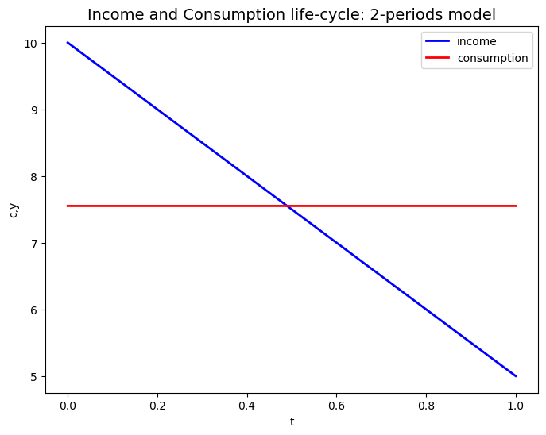

import numpy as np
import matplotlib.pyplot as plt
import os
from matplotlib import cm
import quantecon as qe
from scipy import optimize
import quantecon as qe
# os.chdir(r"C:\Users\jzurita\OneDrive - University of Edinburgh\Courses\Programming Numerical Methods\Week 4")
# from functions import gini
# import quantecon as qe
# import warnings
# warnings.filterwarnings('ignore')
Lab4
ECNM10115 Programming and Numerical Methods for Economics
PS2: Feedback
PS2: Feedback
PS2: Feedback: Statistics
| Statistic | Value |
|---|---|
| Mean | 67.83 |
| SD | 3.4 |
| Min | 63 |
| Max | 74 |
Import Libraries, Functions and Display Settings
Exercise 2
Exercise 2. Solving Cournot markets using root-finding routines
2.a the FOCs of the firms.
Taking the first order conditions (FOC) on the the firm’s profit equations,
\[ \frac{\partial \pi_1(q_1, q_2)}{\partial q_1} = P(q_1 + q_2) + P'(q_1 + q_2) q_1 - C'_1(q_1) = 0 \]
\[ \frac{\partial \pi_2(q_1, q_2)}{\partial q_2} = P(q_1 + q_2) + P'(q_1 + q_2) q_2 - C'_2(q_2) = 0 \]
we obtain the 2 equations that characterize the Cournot’s duopoly solution. \[\begin{align*} &(q_1 + q_2)^{-\alpha} - \alpha q_1 (q_1 + q_2)^{-\alpha - 1} - c_1 q_1 = 0 \\ &(q_1 + q_2)^{-\alpha} - \alpha q_2 (q_1 + q_2)^{-\alpha - 1} - c_2 q_2 = 0 \\ \end{align*}\]
def CournotFunct(q):
q1,q2=q
f_1=(q_1 + q_2)^{-\alpha} - \alpha q_1 (q_1 + q_2)^{-\alpha - 1} - c_1 q_1
f_2=(q_1 + q_2)^{-\alpha} - \alpha q_2 (q_1 + q_2)^{-\alpha - 1} - c_2 q_2
return [f_1, f2]2b - Find the Cournot equilibrium (\(q_1\) , \(q_2\) , \(p^∗\)). Solve the system equations given by the previous first order conditions and report the equilibrium quantities of \(q_1\) and \(q_2\) and equilbrium price \(p^∗\). Provide an interpretation of the results.
from scipy.optimize import fsolve
# Parameter values
alpha = 0.625
c1 = 0.6
c2 = 0.8
print('2b =========')
# Define the Cournot equilibrium equations
def cournot_foc_2(q):
q1, q2 = q
f1 = (q1 + q2)**(-alpha) - alpha * q1 * (q1 + q2)**(-alpha - 1) - c1 * q1
f2 = (q1 + q2)**(-alpha) - alpha * q2 * (q1 + q2)**(-alpha - 1) - c2 * q2
return [f1, f2]
2b =========Let’s compute equilibrium quantities:
# Solve the Cournot equilibrium using fsolve
# Initial guess for equilibrium quantities
x0= [1.0, 1.0]
q1_star, q2_star = fsolve(cournot_foc_2, x0)
p_star = (q1_star+q2_star)**(-alpha)# Extract the results
# Display the results
print("Equilibrium Quantities:")
print(f"q1* = {q1_star:.4f}")
print(f"q2* = {q2_star:.4f}")
print(f"p* = {p_star:.4f}")Equilibrium Quantities:
q1* = 0.8396
q2* = 0.6888
p* = 0.7671Exercise 3
Optimal life-cycle consumption paths: (40 points). Consider the problem of an individual that maximizes his/her lifetime utility by choosing consumption levels across periods. The per period utility funci- ton takes a CRRA form.
\[ u(c_t) = \frac{c^{1−\theta}}{1 − θ}\]
where we assume a constant relative risk aversion parameter of θ = 1.5. The individual discounts future consumption at discount rate β = 0.96. The individual can save and borrow in a risk-free asset at at an interest rate r. For simplicity, let’s assume $ r=-1$.
3a- A two-period model: consider the problem of an individual that lives for two periods (t = 0, t = 1) and maximizes his/her lifetime utility, subject that the budget constraint at each period hold. The maximization problem is:
>def xxxx():
##. return \({u}(c_0)\) + \(\beta\times {u}(c_1)\)
>def xxxx():
##. return \({u}(c_0)\) + \(\beta\times {u}(c_1)\)+\(\beta^2\times {u}(c_2)\)+ \(\beta^3\times {u}(c_3)\)
>def xxxx():
##. return \({u}(c_0)\) + $$
\[ Max_{\{c_0,c_1,a_1\}}=\{{u}(c_0)+ {\color{red}{\beta}} \times {u}(c_1) \}\] \[ st:\] \[{c_0}+a_1={\color{red}{a_0}}+{\color{red}{y_0}} \implies a_1={\color{red}{a_0}}+{\color{red}{y_0}}-c_0\] \[ c_1=(1+{\color{red}{r}})a_1+{\color{red}{y_1}} =(1+{\color{red}{r}})({\color{red}{a_0}}+{\color{red}{y_0}}-c_0)+{\color{red}{y_1}} \]
\[ c_1=(1+{\color{red}{r}})({\color{red}{a_0}}+{\color{red}{y_0}}-c_0)+{\color{red}{y_1}} \]
\[ c_1=(1+{\color{red}{r}})({\color{red}{a_0}}+{\color{red}{y_0}}-c_0)+{\color{red}{y_1}} \] \[ c_2=(1+{\color{red}{r}})({\color{red}{a_1}}+{\color{red}{y_1}}-c_1)+{\color{red}{y_2}} \] \[ c_3=(1+{\color{red}{r}})({\color{red}{a_2}}+{\color{red}{y_2}}-c_2)+{\color{red}{y_3}} \]
Using the following parameter values \(a_0 = 0\), \(y_0 = 10\), \(y_1 = 5\), find the optimal consumption \(c^0\) , \(c^1\) that solves the previous problem. Plot the life-cycle of income and optimal consumption. That is a line plot where the x-axis are the time periods: \(t = 0\), \(1\), line-1 is \(y_0\), \(y_1\), and line-2 is \(c^0\) , \(c^1\).
# Define the parameter values
beta = 0.96
r= 1/beta-1
a0 = 0
y = [10, 5]# Define the Utility CRRA Funtion for each period
def u_crra(c,theta=1.5):
if c<0.00001:
return -np.infty
if theta==1:
return np.log(c)
else:
return (c**(1-theta))/(1-theta)#Parameters
params = [u_crra, beta, r, a0, y]def Utility(c0,params):
u, beta, r,a0,y =params
c_1 = (1+r)*(a_0+y_{0}-c0)+y_1
return -(u(c0) + beta*u(c_1)) Set the lifetime utility maximization o minimization problem
#Intertemportal Utility
def U(c0,params):
u, beta, r, a0, y = params
c1 = (1+r)*(a0+y[0]-c0)+y[1] # rewrite the problem in terms of unconstrained maximization for 1 variable
return -(u(c0)+beta*u(c1)) # and I include the minus since we are maximizing utility!Minimization Problem
Scipy can solve this problem for us. Let’s call optimize.
from scipy import optimizeLet’s use minimize function:
# Set Initial value and minimize
x0= 1
res = optimize.minimize(U,x0, method='BFGS', args=params) Function output
res message: Optimization terminated successfully.
success: True
status: 0
fun: 1.4265376720343712
x: [ 7.551e+00]
nit: 8
jac: [-2.086e-07]
hess_inv: [[ 5.113e+01]]
nfev: 18
njev: 9Let’s compute the values of c_1
c_0_opt=res.x
c_1_opt= (1+r)*(a0+y[0]-res.x)+y[1]
c_star = [c_0_opt,c_1_opt]Graph: lifecycle of income and consumption
Tips:
- Use x = range(0,2)
- \(y_{1}\)= Income vector
- \(y_2\)= Consumption vector
# plot the lifecycle of income and consumption. that is a line plot where x=0,1, line-1 is y0, y1, line-2 is c0, c1.
fig, ax = plt.subplots(figsize=(8,6))
ax.plot(range(0,2), y, linewidth=2.0, color='b',label='income')
ax.plot(range(0,2), c_star, linewidth=2.0, color='r',label='consumption')
#ax.plot(range(0,2), a_star, linewidth=2.0, color='r',label='consumption')
ax.set_xlabel('t')
ax.set_ylabel('c,y')
ax.legend()
ax.set_title('Income and Consumption life-cycle: 2-periods model', fontsize=14)
plt.show()